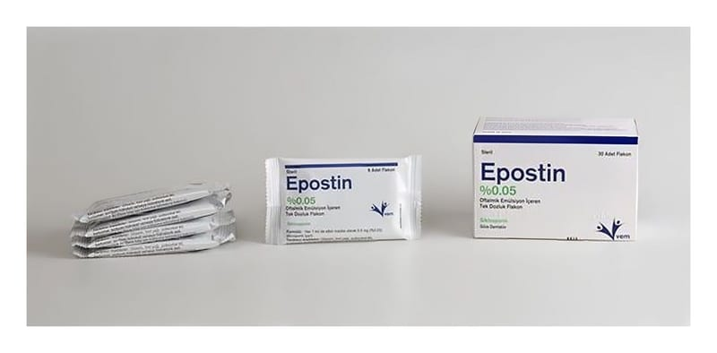

Epostin % 0.05 Oftalmik Emülsiyon İçeren Tek Dozluk Flakon, 30 Adet

Ne için kullanılır
KT · Bölüm 1EPOSTİN, 0,9 ml kapasiteli tek kullanımlık flakonlarda 0,4 ml emülsiyon olarak bulunmaktadır. Her kutuda 30 adet tek kullanımlık flakon bulunmaktadır. EPOSTİN iltihap giderici etkilere sahip, göze damlatıldığında göz yüzeyi ile ilişkili bağışıklık sistemini düzenleyen siklosporin maddesi içermektedir. İnsanda kana geçişi veya kanda birikimi saptanmamıştır. EPOSTİN, göz kuruluğu ile ilişkili gözdeki iltihaba bağlı olarak gözyaşı yapımının baskılandığı öngörülen hastalarda gözyaşı yapımının artırılmasında kullanılır.